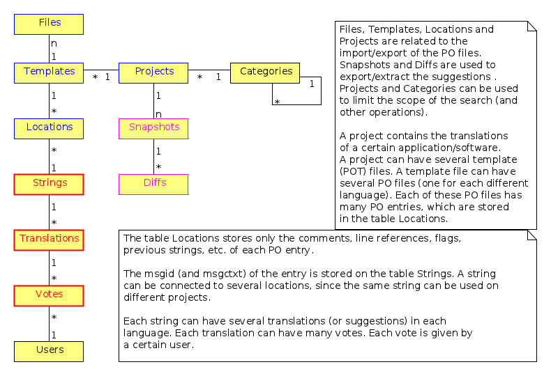
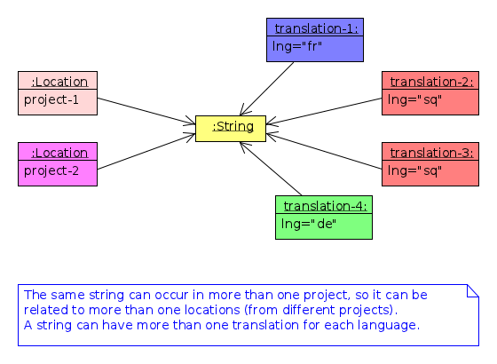

Documentation of the module l10n_suggestions
This file is used to keep the project organized. It is based on the org-mode of Emacs (http://orgmode.org/), which is a good tool for keeping notes, project planning, tasks management, etc.
Table of Contents
1 Functional requirements
Describe the desired functionality of the module. Then define the requirements in terms of forms and other UI elements, permissions, etc.
1.1 Desired Functionality
1.1.1 Open access
Everybody will be able to use the system for the purpose of getting translation suggestions for a certain string, even unauthenticated (anonymous/guest) users (just like open-tran.eu). Furthermore, it should be possible to use an API (web services), so that these suggestions can be retrieved and used even by external applications.
1.1.2 Authenticated voting
Submitting votes or new suggestions will be allowed only for the subscribed users (which have agreed to help and contribute). No contributions from anonymous/guests will be accepted.
1.1.3 Tracking votes
Votes and suggestions will not be anonymous. For each vote or suggestion, the user who submitted it will be recorded and saved. This will allow the user to see all the strings that he has already voted for, and also to change any of the votes, if he later changed his mind. At the same time it will prevent multiple votes by the same user for the same translation.
1.1.4 Highly customizable
The system will have a flexible configuration and customization page. This means that the user should be able to customize how much he would like to help and contribute. For example:
- how many translation votes per day (an upper limit)
- which communication means he preferes (email, facebook, google+, twitter, website, android app, iPhone app, etc.)
- which projects or packages he would like to focus on (for example, if the user selects the package KDE, only strings that belong to a project on this package will be sent to him for review and feedback)
- which languages he would like to use as primary and secondary source languages (for example a user that is not confident in English, may choose to use French as a primary language and Italian+Spanish as secondary/helper languages)
- sequential or random selection of strings (random is the default, but if the user is interested in just one or a few projects, he may prefer to review the strings sequentially)
1.1.5 Evaluation Algorithms
The contribution and performance of the users should be measured and evaluated using certain algorithms and/or heuristics. The users will be awarded points based on their performance. Probably some rewarding mechanizms can be integrated later for the top contributers.
1.1.6 Detailed and comprehensive reporting and statistics
Different kinds of reports and statistics related to users, projects, activity etc. should be supported and provided. (What are exactly these reports? To be elaborated.)
1.1.7 Integration with other modules
It should be possible to integrate with other l10n modules, like l10n_server, etc. When a new project is added on l10n_server, the strings that need to be translated can get some suggestions automatically from l10n_suggestions. Or they can be submitted to l10n_suggestions so that people can supply translation and suggestions for them, to vote on these suggestions, etc.
The manager of the project on l10n_server may also adjust some configuration parameters related to the suggestions. For example a suggestion can be accepted as a correct translation only if it got 75% of all the votes about all the suggestions, otherwise it should be considered as fuzzy translation and needs to be reviewed by the package manager.
1.2 Required forms
1.2.1 Query interface
On this form anybody (registered user or anonymous) can supply a string in English, and the system will return the translation suggestions related to it and the corresponding votes that each suggestion has.
If the English string does not have an exact match on the DB, a list of similar strings will be returned and the user will choose toc check one of them.
This functionality of querying suggestions will be offered also by a web service (XMLRPC) so that it can be used by any external programs.
1.2.2 Suggestion interface
This is the form where the (authenticated) user is presented with an English string and several translation suggestions for it, and he votes on one of them as the best, or provides another suggestion which he thinks is better.
The string to be translated is selected randomly, unless the user has selected 'sequential' on his settings. The selection of the string is also done so that it complies with the restrictions imposed by the user on his settings (for example only from a certain package).
The selection of the string should be also influenced by certain algoriths and heuristics, which should try to give more exposure to the strings that need more votes. For example if a string already got 10 votes and another one got just 2 votes, the second one should be more likely to be selected.
This interface should be able to integrate somehow with facebook, email, google+, etc.
1.2.3 User configuration interface
Here the user customizes his setings, as described in the section 'Desired Functionality' above.
1.2.4 Admin interfaces
The admin should be able to customize the overall behaviour of the module, to check activity, to get reports and statistics, to maintain the data (backup, restore, update) etc.
1.2.5 Other modules interfaces
In case of integration with other modules (for example with l10n_server), l10n_suggestions should alter their forms and interfaces to add the neccessary options and settings.
2 Design
2.1 DB Schema

Tables and their relations.

Structure of the DB.

Structure of the DB.
Files, Projects and Locations are related to the import/export of the PO files.
Projects and Categories can be used to limit the scope of the search (and other operations).
A project contains the translations of a certain application (software).
A project can have several PO files (one for each different language). Each of these PO files has many PO entries, which are stored in the table Locations.
The table Locations stores only the comments, line references, flags, previous strings, etc. of each PO entry.
The msgid (and msgctxt) of the entry is stored on the table Strings. A string can be connected to several locations, since the same string can be used on different projects.
Each string can have several translations (or suggestions) in each language. Each translation can have many votes. Each vote is given by a certain user.
A release can be appended to the name of the project as well. So, two different releases of the same software project are considered as two different projects. Each of them has its on list of locations, however they share most of the strings and translations. Actually, for the purposes of l10n_suggestions only the latest release is what matters, so any earlier releases will eventually be removed (or archived).
The DB tables and their fields:
- Files
-
A PO file that is imported and can be exported from the
DB.
- fid : serial
- Auto-increment internal identifier.
- hash : char(40)
- The SHA1() hash of the whole file content.
- pid : int
- Reference to the project for which this PO file is a translation.
- lng : varchar(10)
- The code of the translation language.
- headers : text
- Headers of the imported PO file, as a long line. Needed mainly for exporting.
- comments : text
- Translator comments of the file (above the header entry). Needed mainly for exporting.
- uid : int
- Id of the user that imported the file.
- time : datetime
- The date and time that the record was registered.
- Projects
-
A project is the software/application which is
translated by the PO files.
- pid : serial
- Auto-increment internal identifier.
- project : varchar(100)
- Project name (with the release appended if needed).
- origin : varchar(100)
- The origin of the project (where does it come from).
- uid : int(11)
- Id of the user that registered the project.
- time : datetime
- The date and time that the project was registered.
- Locations
-
Locations (lines) where a l10n string is found.
- lid : serial
- Internal numeric identifier of a line.
- sguid : char(40)
- Reference to the id of the l10n string contained in this line.
- pid : int
- Reference to the id of the project that contains this line.
- translator_comments : varchar(500)
- Translator comments in the PO entry (starting with "# ").
- extracted_comments : varchar(500)
- Extracted comments in the PO entry (starting with "#. ").
- line_references : varchar(500)
- Line numbers where the sting occurs (starting with "#: ").
- flags : varchar(100)
- Flags of the PO entry (starting with "#, ").
- previous_msgctxt : varchar(500)
- Previous msgctxt in the PO entry (starting with "#| msgctxt ").
- previous_msgid : varchar(500)
- Previous msgid in the PO entry (starting with "#| msgid ").
- previous_msgid_plural : varchar(500)
- Previous msgid_plural in the PO entry (starting with "#| msgid_plural ").
- Strings
-
Translatable strings that are extracted from projects.
- string : text
- The string to be translated: CONCAT(msgid,CHAR(0),msgid_plural)
- context : varchar(500)
- The string context (msgctxt of the PO entry).
- sguid : char(40)
- Globally Unique ID of the string, as hash of the string and context: SHA1(CONCAT(string,context))
- uid : int
- ID of the user that inserted this string on the DB.
- time : datetime
- The time that this string was entered on the DB.
- count : int/tiny
- How often this string is encountered in all the projects. Can be useful for any heuristics that try to find out which strings should be translated first.
- active : boolean
- The active/deleted status of the record.
- Translations
-
Translations/suggestions of the l10n strings.
For each string there can be translations for different
languages, and more than one translation for each language.
- sguid : int
- Reference to the id of the l10n string that is translated.
- lng : varchar(5)
- Language code (en, fr, sq_AL, etc.)
- translation : varchar(1000)
- The (suggested) translation of the string.
- tguid : char(40)
- Globally Unique ID of the translation, defined as the hash: SHA1(CONCAT(translation,lng,sguid))
- count : int/tiny
- Count of votes received so far. This can be counted on the table Votes, but for convenience is stored here as well.
- uid : int
- id of the user that initially suggested/submitted this translation
- time : datetime
- Time that the translation was entered into the database.
- active : boolean
- The active or deleted status of the record.
- Votes
-
Votes for each translation/suggestion.
- vid : serial
- Internal numeric identifier for a vote.
- tguid : char(40)
- Reference to the id of the translation which is voted.
- uid : int
- Reference to the id of the user that submitted the vote.
- time : datetime
- Timestamp of the voting time.
- active : boolean
- The active or deleted status of the record.
- Users
-
Users that contribute translations/suggestions/votes.
- uid : int
- The numeric identifier of the user.
- points : int
- Number of points rewarded for his activity.
- config : varchar(250)
- Serialized configuration variables.
2.2 UI
2.2.1 translations/get/<lng>/<sguid>
An interface for suggesting translations to a string. Gets as input
- the language code to which will be translated
- the hash of the string to be translated
Returns a list of translation suggestions of the given string. This interface should be accessible by anybody. There should be also a corresponding XML-RPC interface, so that it can be accessed from external programs.
2.2.2 translations/search?lng=..&limit=..&mode=..&words=..
Displays a list of strings and the corresponding suggestions, which match some filter conditions. Filter conditions can be modified on the interface. Search can be done by the content of the strings and suggestions, and can be limited in scope by the project, by the author of suggestions, by the submition date, etc.
From the displayed list, it is also possible to view details (for string or suggestion), to submit votes, etc.
2.2.3 translations/vote
This interface will select a random string and will present it and its available translations to the user. The user will vote one of them as the best translation, or will provide a new translation that he thinks is better.
The original string is usually presented in English, but additional languages can be presented as well, if the user is not confident with English. (He can select these options on the user settings page as well.)
2.2.4 translations/user_settings
The user can set:
- the prefered source language(s)
- how many votes a day is willing to give
- etc.
2.2.5 translations/admin
- translations/admin/config
- translations/admin/dashboard
- translations/admin/reports
- translations/admin/stats
3 Implementation Plan
- [X] Make voting work (without permissions, user setting, admin config, etc.)
- [] Release an initial drupal package and prepare a test/demo site.
- [] Add admin config, user settings, permissions, permission checking, etc.
- [] Make a basic integration with facebook (for voting).
- [] Put it online.
- [] Add a basic email interface (for voting).
- [] Add a mobile interface (or theme).
- [] Build the pages for admin dashboard, reports and stats.
- [] Integrate with projects and packages from l10n_server
- [] Add an API for external applications.
- [] Integration with google+, twitter, diaspora, etc.
- [] Android app that can be used for voting.
4 Tasks
4.1 DB
4.1.1 DONE Write scripts for importing and updating data from *.po files
- Take care to preserve the data that already exist in the DB.
4.1.2 DONE Improve hash functions for strings and translations
4.1.3 DONE Replace id-s by uid-s (universal id-s) based on hashes
4.1.4 DONE Write scripts for exporting PO files from the DB.
4.2 UI
4.2.1 List of string–>translations
- Define and implement suitable access rights.
- Some of the advanced filtering options should be available only if the user has propper access rights.
- Some editing options should be available only if the user has propper access rights.
- For each suggestion, the admin (or moderators) should be able to apply additional actions (for example remove the suggestion).
- For each l10n string, display details like: submitted by, submitted when, in which projects it occurs (related locations), etc.
- For each l10n string, display also the corresponding translations (best suggestions) in auxiliary (helper) languages. For example, besides the original l10n string (in English), the French and German translations may be displayed as well, if these are selected on the display options of the filter.
- For each suggestion, add a Like (or +1) button. When it is clicked, the vote is submitted through an AJAX call. The voted (or liked, or +1'd) suggestion should be visibly distinguished from the rest.
- For each suggestion, display details like: suggested by, suggested when, number of votes, some of the latest voters (and all the voters when clicked).
- For each suggestion add a Flag (or -1) button. A suggestion is flagged when it is totally irrelevant to the string, or is spam, or is abusive, etc. In general, when a suggestion is flagged, it is something that should be removed. When flagging a suggestion, a reason/explanation may be given as well. When a suggestion is flagged, it has to be reviwed and removed by an admin/moderator. The admin may also take some action on the user that submitted the offending suggestion (or on the user that submitted the flag, if the suggestion is ok).
- Voting mode can be 'single' or 'multiple', and it can be selected by admin (during installation). On mode 'single' at most one vote per string is allowed. On mode 'multiple' at most one vote for translation is allowed (user can approve more than one translation for the same string).
- For the 'multiple' mode, an Unlike button should be available as well (in order to change the voting at any time).
- When the votes are changed, the old (removed) votes should be stored on an archive table, in order to keep the history of changing votes as well.
4.2.2 TODO XML-RPC interface
Or some other web-service (API) interface.
4.2.3 DONE Interface translations/vote
This is almost the same as the search interface. However, instead of using a filter to select strings, they are selected randomly, based on user preferencies, and also on the priorities of translation.
4.3 Misc
- Start with simple tests (l10n_suggestions.test)
- Improve instalation.
- Make an initial package.
5 Notes
5.1 How to create TAGS for Emacs
find . -type f | etags - find . -type f \( -name "*.module" -o -name "*.install" -o -name "*.inc" \) | etags -a –language=php -
5.2 Fine-Tuning MySQL Full-Text Search
http://dev.mysql.com/doc/refman/5.0/en/fulltext-fine-tuning.html http://dev.mysql.com/doc/refman/5.0/en/fulltext-search.html
We want to index even short words and to disable stopword filtering.
-
Edit /etc/mysql/my.cnf and set:
[mysqld] ft_min_word_len = 1 ft_stopword_file = ''
[isamchk] ft_min_word_len = 1 ft_stopword_file = ''
- Restart the server: service mysql restart
- Drop and recreate fulltext indexes.
5.3 Misc
- Field sguid:char(40) on strings, locations and translations must be of the same character set, otherwise mysql will not use the index (primary key) on queries. The same for the field tguid.
Date: 2012-01-04 Wed
HTML generated by org-mode 6.33x in emacs 23